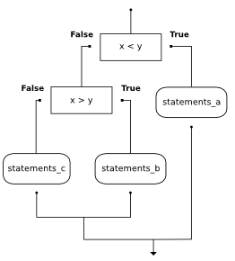

The Python type for storing true and false values is called bool, named after the British mathematician, George Boole. George Boole created Boolean Algebra, which is the basis of all modern computer arithmetic.
There are only two boolean values. They are True and False. Capitalization is important, since true and false are not boolean values (remember Python is case sensitive).
(ch05_1)
Note
Boolean values are not strings!
It is extremely important to realize that True and False are not strings. They are not surrounded by quotes. They are the only two values in the data type bool. Take a close look at the types shown below.
(ch05_1a)
A boolean expression is an expression that evaluates to a boolean value. The equality operator, ==, compares two values and produces a boolean value related to whether the two values are equal to one another.
(ch05_2)
In the first statement, the two operands are equal, so the expression evaluates to True. In the second statement, 5 is not equal to 6, so we get False.
The == operator is one of six common comparison operators; the others are:
x != y # x is not equal to y
x > y # x is greater than y
x < y # x is less than y
x >= y # x is greater than or equal to y
x <= y # x is less than or equal to y
Although these operations are probably familiar to you, the Python symbols are different from the mathematical symbols. A common error is to use a single equal sign (=) instead of a double equal sign (==). Remember that = is an assignment operator and == is a comparison operator. Also, there is no such thing as =< or =>.
Note too that an equality test is symmetric, but assignment is not. For example, if a == 7 then 7 == a. But in Python, the statement a = 7 is legal and 7 = a is not. (Can you explain why?)
Scratch Editor
Check your understanding
6.1.1: Which of the following is a Boolean expression? Select all that apply.
There are three logical operators: and, or, and not. The semantics (meaning) of these operators is similar to their meaning in English. For example, x > 0 and x < 10 is true only if x is greater than 0 and at the same time, x is less than 10. How would you describe this in words? You would say that x is between 0 and 10, not including the endpoints.
n % 2 == 0 or n % 3 == 0 is true if either of the conditions is true, that is, if the number is divisible by 2 or divisible by 3. In this case, one, or the other, or both of the parts has to be true for the result to be true.
Finally, the not operator negates a boolean expression, so not x > y is true if x > y is false, that is, if x is less than or equal to y.
(chp05_3)
Common Mistake!
There is a very common mistake that occurs when programmers try to write boolean expressions. For example, what if we have a variable number and we want to check to see if its value is 5,6, or 7. In words we might say: “number equal to 5 or 6 or 7”. However, if we translate this into Python, number == 5 or 6 or 7, it will not be correct. The or operator must join the results of three equality checks. The correct way to write this is number == 5 or number == 6 or number == 7. This may seem like a lot of typing but it is absolutely necessary. You cannot take a shortcut.
Scratch Editor
Check your understanding
6.2.1: What is the correct Python expression for checking to see if a number stored in a variable x is between 0 and 5.
We have now added a number of additional operators to those we learned in the previous chapters. It is important to understand how these operators relate to the others with respect to operator precedence. Python will always evaluate the arithmetic operators first (** is highest, then multiplication/division, then addition/subtraction). Next comes the relational operators. Finally, the logical operators are done last. This means that the expression x*5 >= 10 and y-6 <= 20 will be evaluated so as to first perform the arithmetic and then check the relationships. The and will be done last. Although many programmers might place parenthesis around the two relational expressions, it is not necessary.
The following table summarizes the operator precedence from highest to lowest. A complete table for the entire language can be found in the Python Documentation.
| Level | Category | Operators |
|---|---|---|
| 7(high) | exponent | ** |
| 6 | multiplication | *,/,//,% |
| 5 | addition | +,- |
| 4 | relational | ==,!=,<=,>=,>,< |
| 3 | logical | not |
| 2 | logical | and |
| 1(low) | logical | or |
Scratch Editor
Check your understanding
6.3.1: Which of the following properly expresses the precedence of operators (using parentheses) in the following expression: 5*3 > 10 and 4+6==11
In order to write useful programs, we almost always need the ability to check conditions and change the behavior of the program accordingly. Selection statements, sometimes also referred to as conditional statements give us this ability. The simplest form of selection is the if statement. This is sometimes referred to as binary selection since there are two possible paths of execution.
(ch05_4)
The syntax for an if statement looks like this:
if BOOLEAN EXPRESSION:
STATEMENTS_1 # executed if condition evaluates to True
else:
STATEMENTS_2 # executed if condition evaluates to False
The boolean expression after the if statement is called the condition. If it is true, then the indented statements get executed. If not, then the statements indented under the else clause get executed.

As with the function definition from the last chapter and other compound statements like for, the if statement consists of a header line and a body. The header line begins with the keyword if followed by a boolean expression and ends with a colon (:).
The indented statements that follow are called a block. The first unindented statement marks the end of the block.
Each of the statements inside the first block of statements is executed in order if the boolean expression evaluates to True. The entire first block of statements is skipped if the boolean expression evaluates to False, and instead all the statements under the else clause are executed.
There is no limit on the number of statements that can appear under the two clauses of an if statement, but there has to be at least one statement in each block.
Lab
Scratch Editor
Check your understanding
6.4.1: How many statements can appear in each block (the if and the else) in a conditional statement?
6.4.2: What does the following code print (choose from output a, b, c or nothing).
if (4 + 5 == 10):
print TRUE
else:
print FALSE
a.
TRUEb.
FALSEc.
TRUE FALSE
6.4.3: What does the following code print?
if (4 + 5 == 10):
print TRUE
else:
print FALSE
print TRUE
a.
TRUEb.
TRUE FALSEc.
FALSE TRUEd.
TRUE FALSE TRUE

Another form of the if statement is one in which the else clause is omitted entirely. This creates what is sometimes called unary selection. In this case, when the condition evaluates to True, the statements are executed, otherwise the flow of execution continues to the statement after the if.
(ch05_unaryselection)
What would be printed if the value of `` x`` is negative? Try it.
Scratch Editor
Check your understanding
6.5.1: What does the following code print?
x = -10
if x < 0:
print("The negative number ", x, " is not valid here.")
print("This is always printed")
a.
This is always printedb.
The negative number -10 is not valid here This is always printedc.
The negative number -10 is not valid here
6.5.2: Will the following code cause an error?
x = -10
if x < 0:
print("The negative number ", x, " is not valid here.")
else:
print(x, " is a positive number")
else:
print("This is always printed")
One conditional can also be nested within another. For example, assume we have two integer variables, x and y. The following pattern of selection shows how we might decide how they are related to each other.
if x < y:
print("x is less than y")
else:
if x > y:
print("x is greater than y")
else:
print("x and y must be equal")
The outer conditional contains two branches. The second branch (the else from the outer) contains another if statement, which has two branches of its own. Those two branches could contain conditional statements as well.
The flow of control can be seen in this flowchart illustration.
Here is a complete program that defines values for x and y. Run the program and see the result. Then change the values of the variables to change the flow of control.
(sel2)
Note
In some programming languages, matching the if and the else is a problem. However, in Python this is not the case. The indentation pattern tells us exactly which else belongs to which if.
If you are still a bit unsure, here is the same selection as part of a codelens example. Step through it to see how the correct print is chosen.
|
Source Code
Step ? of ?
|
|
Program output:
|
Scratch Editor
Check your understanding
6.6.1: Will the following code cause an error?
x = -10
if x < 0:
print("The negative number ", x, " is not valid here.")
else:
if x > 0:
print(x, " is a positive number")
else:
print(x," is 0")
Python provides an alternative way to write nested selection such as the one shown in the previous section. This is sometimes referred to as a chained conditional
if x < y:
print("x is less than y")
elif x > y:
print("x is greater than y")
else:
print("x and y must be equal")
The flow of control can be drawn in a different orientation but the resulting pattern is identical to the one shown above.

elif is an abbreviation of else if. Again, exactly one branch will be executed. There is no limit of the number of elif statements but only a single (and optional) final else statement is allowed and it must be the last branch in the statement.
Each condition is checked in order. If the first is false, the next is checked, and so on. If one of them is true, the corresponding branch executes, and the statement ends. Even if more than one condition is true, only the first true branch executes.
Here is the same program using elif.
(sel4)
Scratch Editor
Check your understanding
6.7.1: Which of I, II, and III below gives the same result as the following nested if?
# nested if-else statement
x = -10
if x < 0:
print("The negative number ", x, " is not valid here.")
else:
if x > 0:
print(x, " is a positive number")
else:
print(x, " is 0")
I.
if x < 0:
print("The negative number ", x, " is not valid here.")
else (x > 0):
print(x, " is a positive number")
else:
print(x, " is 0")
II.
if x < 0:
print("The negative number ", x, " is not valid here.")
elif (x > 0):
print(x, " is a positive number")
else:
print(x, " is 0")
III.
if x < 0:
print("The negative number ", x, " is not valid here.")
if (x > 0):
print(x, " is a positive number")
else:
print(x, " is 0")
6.7.2: What will the following code print if x = 3, y = 5, and z = 2?
if x < y and x < z:
print ("a")
elif y < x and y < z:
print ("b")
else:
print ("c")
Functions can return boolean values, which is often convenient for hiding complicated tests inside functions. For example:
(ch06_boolfun1)
The name of this function is isDivisible. It is common to give boolean functions names that sound like yes/no questions. isDivisible returns either True or False to indicate whether the x is or is not divisible by y.
We can make the function more concise by taking advantage of the fact that the condition of the if statement is itself a boolean expression. We can return it directly, avoiding the if statement altogether:
def isDivisible(x, y):
return x % y == 0
Boolean functions are often used in conditional statements:
if isDivisible(x, y):
... # do something ...
else:
... # do something else ...
It might be tempting to write something like if isDivisible(x, y) == True: but the extra comparison is not necessary. The following example shows the isDivisible function at work. Try it with a few other actual parameters to see what is printed.
(ch06_boolfun2)
Here is the same program in codelens.
|
Source Code
Step ? of ?
|
|
Program output:
|
Scratch Editor
Check your understanding
6.8.1: What is a Boolean function?
6.8.2: Is the following statement legal in Python (assuming x, y and z are defined to be numbers)?
return x + y < z
What do these expressions evaluate to?
3 == 3
3 != 3
3 >= 4
not (3 < 4)
Give the logical opposites of these conditions. You are not allowed to use the not operator.
a > b
a >= b
a >= 18 and day == 3
a >= 18 and day != 3
Write a function which is given an exam mark, and it returns a string — the grade for that mark — according to this scheme:
Mark |
Grade |
|---|---|
>= 90 |
A |
[80-90) |
B |
[70-80) |
C |
[60-70) |
D |
< 60 |
F |
The square and round brackets denote closed and open intervals. A closed interval includes the number, and open interval excludes it. So 79.99999 gets grade C , but 80 gets grade B.
Let xs = [83, 75, 74.9, 70, 69.9, 65, 60, 59.9, 55, 50, 49.9, 45, 44.9, 40, 39.9, 2, 0]
Test your function by printing the mark and the grade for all the elements in this list.
Modify the turtle bar chart program so that the bar for any value of 200 or more is filled with red, values between [100 and 200) are filled yellow, and bars representing values less than 100 are filled green.
In the turtle bar chart program, what do you expect to happen if one or more of the data values in the list is negative? Try it out. Change the program so that when it prints the text value for the negative bars, it puts the text below the bottom of the bar.
Write a function findHypot which, given the length of two sides of a right-angled triangle, returns the length of the hypotenuse. (Hint: x ** 0.5 will return the square root, or use sqrt from the math module)
Write a function called is_even(n) that takes an integer as an argument and returns True if the argument is an even number and False if it is odd.
Now write the function is_odd(n) that returns True when n is odd and False otherwise.
Modify is_odd so that it uses a call to is_even to determine if its argument is an odd integer.
Write a function is_rightangled which, given the length of three sides of a triangle, will determine whether the triangle is right-angled. Assume that the third argument to the function is always the longest side. It will return True if the triangle is right-angled, or False otherwise.
Hint: floating point arithmetic is not always exactly accurate, so it is not safe to test floating point numbers for equality. If a good programmer wants to know whether x is equal or close enough to y, they would probably code it up as
if abs(x-y) < 0.000001: # if x is approximately equal to y
...
Extend the above program so that the sides can be given to the function in any order.
A year is a leap year if it is divisible by 4 unless it is a century that is not divisible by 400. Write a function that takes a year as a parameter and returns True if the year is a leap year, False otherwise.
Implement the Date of Easter program as described in class.
Scratch Editor